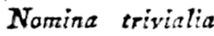
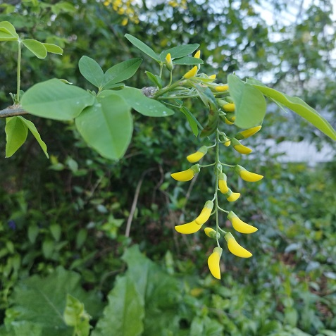
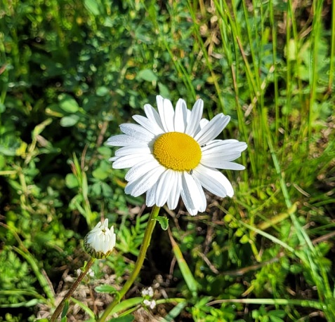
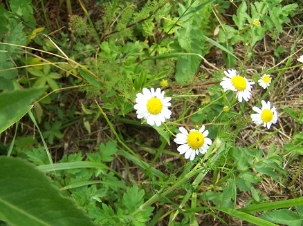
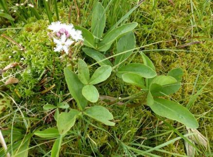
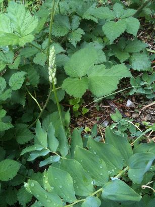
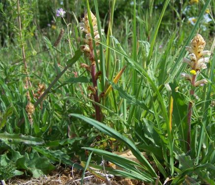
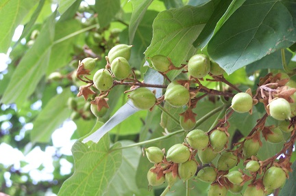
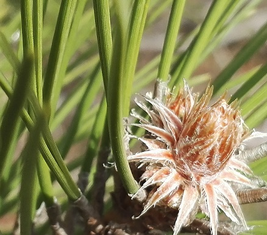
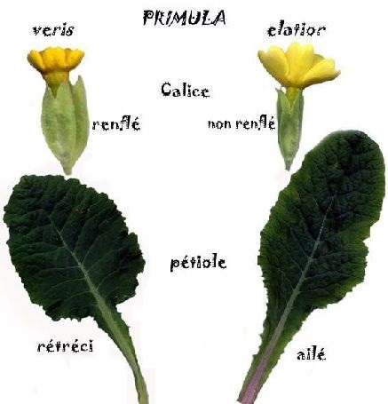

Noms latinsNoms françaisNoms vernaculairesSynonymesLe genre grammatical en BotaniqueCodes de nomenclature
Index
des noms latins des fleurs
et autres êtres vivants

de Linné
I
J
K
L
- Laburnum anagyroides

Paris Gare Montparnasse, Jardin Atlantique, 25 mars 2026 Lactuca muralis
Lactuca perennis
Lactuca serriola
Lactuca virosa
Lagurus ovatus
Lamium album
Lamium galeobdolon
Lamium galeobdolon subsp. argentatum
Lamium maculatum
Lamium purpureum
Lapsana communis
Larix sp.
Laserpitium latifolium
Lathraea clandestina
Lathraea squamaria
Lathyrus aphaca
Lathyrus hirsutus
Lathyrus linifoliusdont la forme linifolius est devenue synonyme.
Lathyrus palustris
Lathyrus pratensis
Lathyrus sylvestris
Lathyrus tuberosus
Legousia speculum-veneris
Leontodon hispidus
Leopoldia comosa
Lepidium campestre
Lepidium draba
Leucanthemum vulgare

Lucy-le-Bois, mai 2026
© Claire Martin-Lucy Ligustrum vulgare
Limodorum abortivum
Limosella aquatica
Linaria alpina
Linaria repens
Linaria vulgaris
Linum catharticum
Linum leonii
Linum tenuifolium
Linum usitatissimum
Lipandra polysperma
Liposthenes glechomae
Liriodendron tulipifera
Lithospermum officinale
Littorella uniflora
Lobelia urens
Logfia minima
Lolium arundinaceum
Lolium multiflorum
Lolium perenne
Lonicera caprifolium
Lonicera periclymenum
Lonicera xylosteum
Lotus corniculatus
Lotus pedunculatus
Luzula forsteri
Luzula multiflora
Luzula sylvatica
Lychnis flos-cuculi = Silene flos-cuculi
Lycopodiella inundata
Lycopsis arvensis
Lycopodium annotinum
Lycopus europaeus
Lysimachia arvensis
Lysimachia foemina
Lysimachia nemorum
Lysimachia nummularia
Lysimachia punctata
Lysimachia vulgaris
Lythrum salicaria
M
- Maclura pomifera
Malus sylvestris
Malva alcea
Malva moschata
Malva setigera
Malva sylvestris
Mandragora officinarum
Mangifera indica
Marchantia polymorpha
Matricaria chamomilla

Lucy-sur-Cure, 17 juin 2011 Matricaria discoidea
Medicago arabica
Medicago lupulina
Medicago sativa
Medicago sativa subsp. falcata
Melampyrum arvense
Melampyrum cristatum
Melampyrum pratense
Melica ciliata
Melica nutans
Melica uniflora
Melilotus albus
Melilotus altissimus
Melilotus officinalis
Melittis melissophylum
Mentha aquatica
Mentha arvensis
Mentha pulegium
Mentha suaveolens
Menyanthes trifoliata

Photo © Jean-Pierre AUDARD Mercurialis annua
Mercurialis perennis
Metasequoia glyptostroboides
Metzgeria furcata
Microthlaspi perfoliatum
Milium effusum
Mimosa pudica
Misopates orontium
Moehringia trinervia
Molinia arundinacea
Molinia caerulea
Muscari botryoides subsp. botryoides
Muscari comosum
Muscari neglectum
Mutarda arvensis
Mutarda nigra
Myosotis arvensis
Myosotis scorpioides
Myosotis sylvatica
Myrica gale
Myriophyllum spicatum
Myriophyllum verticillatum
N
O
- Odontites vernus
Oenanthe fistulosa
Oenanthe silaifolia
Oenothera biennis
Omalotheca sylvatica
Onobrychis viciifolia
Ononis natrix
Ononis spinosa subsp. procurrens
Onopordum acanthium
Ophioglossum vulgatum
Ophrys apifera
Ophrys apifera var. apifera et aurita
Ophrys aranifera
Ophrys fuciflora
Ophrys insectifera
Ophrys virescens
Orchis anthropophora
Orchis mascula
Orchis militaris
Orchis purpurea
Orchis simia
Origanum vulgare
Ornithogalum pyrenaicum

Ornithogalum pyrenaicum (syn. Loncomelos pyrenaicum),
12-05-2014 - © Claire Martin-Lucy Ornithogalum umbellatum
Ornithopus perpusillus
Orobanche sp.
Orobanche alba
Orobanche alsatica
Orobanche amethystea
Orobanche hederae
Orobanche picridis-hieracioidis

Orobanche rapum-genistae
Orthilia secunda
Osmunda regalis
Oxalis acetosella
Oxalis corniculata
Oxalis stricta
Oxybasis urbica
P
- Paeonia mascula
Papaver dubium
Papaver rhoeas
Papaver somniferum
Parietaria judaica
Paris quadrifolia
Parnassia palustris
Parthenocissus tricuspidata
Pastinaca sativa
Paulownia tomentosa

Dijon, 11 juillet 2010 Pedicularis sylvatica
Pentanema salicinum
Persicaria hydropiper
Persicaria lapathifolia
Persicaria maculosa
Petasites hybridus
Petasites pyrenaicus
Petrosedum rupestre
Peucedanum gallicum
Peucedanum oreoselinum
Peucedanum palustre
Phacelia tanacetifolia
Phalaris arundinacea
Phelipanche purpurea
Phleum pratense
Pholcus phalangioides (une araignée)
Phragmites australis
Phyllanthus acidus
Phyteuma orbiculare
Phyteuma spicatum
Phytolacca americana
Picea abies
Picris hieracioides
Pilosella caespitosa
Pilosella officinarum
Pilularia globulifera
Pimpinella saxifraga
Pinus nigra

Lucy-sur-Cure, 3 avril 2019 Pinus pinaster
Pinus strobus
Pinus sylvestris
Plagiomnium undulatum
Plantago lanceolata
Plantago major
Plantago media
Platanthera bifolia
Platanthera chlorantha
Platanus x hispanica
Poa annua
Poa nemoralis
Poa trivialis
Polygala amarella
Polygala calcarea
Polygala vulgaris
Polygonatum multiflorum
Polygonatum odoratum
Polygonum aviculare
Polypodium vulgare
Polystichum aculeatum
Polytrichum formosum
Populus alba
Populus tremula
Portulaca oleracea
Potamogeton crispus
Potentilla argentea
Potentilla erecta
Potentilla reptans
Potentilla sterilis
Potentilla verna
Primula x anglica
Primula elatior
Primula veris

Primula veris et Primula elatior Prospero autumnale
Prostanthera cuneata
Prunella grandiflora
Prunella laciniata
Prunella vulgaris
Prunus avium
Prunus mahaleb
Prunus spinosa
Psammophiliella muralis
Pseudofumaria lutea
Pseudotsuga menziesii
Pteridium aquilinum
Pulicaria dysenterica
Pulmonaria longifolia
Pulsatilla vulgaris
Pyrola chlorantha
Pyrus communis subsp. communis
Pour trouver un nom latin :
Noms latinsNoms françaisNoms vernaculairesSynonymesLe genre grammatical en BotaniqueCodes de nomenclature
 | |